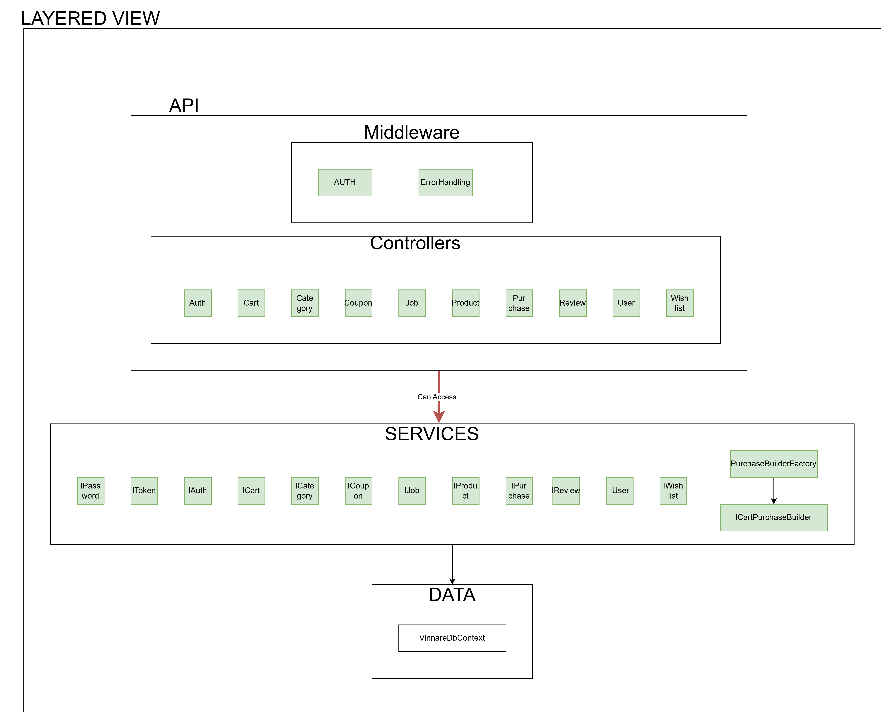

Code Structure
Overview
Vinnare follows an N-Tier architecture, dividing the code into multiple layers to ensure separation of concerns, maintainability, and scalability. The system architecture is illustrated in the diagram below:

Layer Responsibilities
- Api Layer
- Acts as the entry point for requests.
- Contains controllers to handle API endpoints.
- Manages middleware and dependency injection setup.
-
Implements business logic within controllers before delegating to services.
-
Services Layer
- Implements core business logic.
- Services interact with the database via
VinnareDbContext. -
Controllers call services through dependency injection.
-
Data Layer
- Manages database access using Entity Framework Core.
-
Defines entities and database migrations.
-
Shared Layer
- Contains globally used components such as DTOs, enums, configurations, and exceptions.
Inter-layer Communication
- All communication between layers happens through system calls and dependency injection.
- Controllers can call multiple services as needed to process a request.
- The API layer does not interact directly with the database—only services access
VinnareDbContext.
Code Organization and Conventions
- Naming Conventions
- Controllers: Named with
Controllersuffix (e.g.,UserController.cs). - Services: Named with
Servicesuffix (e.g.,UserService.cs). - Tests: Follow the format
{ClassName}_test.cs(e.g.,UserService_test.cs).
This structured approach ensures clarity, consistency, and ease of maintenance across the project.